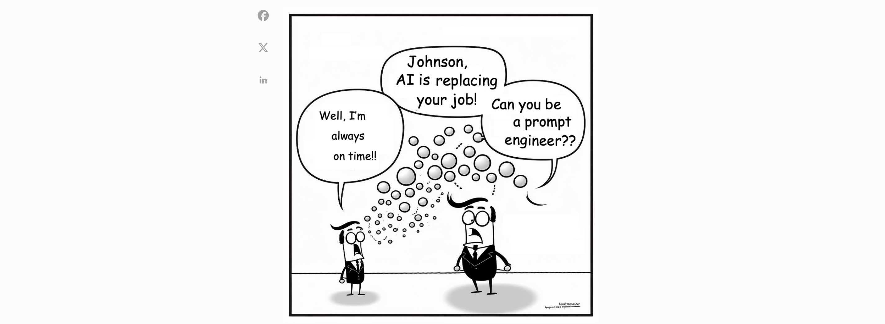

Prompt Engineering
Posted on Thu 25 January 2024 in LLMs
Prompt engineering is the process of continuously improving and refining the prompt used with language models. It involves iteratively adjusting the prompt to achieve the desired output. Perfecting a prompt takes practice and involves trial and error to optimize its effectiveness. By refining the prompt, users can enhance the performance of language models and achieve better results.

Elements of a Prompt
A prompt contains any of the following elements.
- Instruction - a specific task or instruction you want the model to perform. This can be question-answering, summarization, text translation and so on.
- Context - external information or additional context that can steer the model to better responses. This can help giving the context behind the upcoming question.
- Input ****Data - the input or question that we are interested to find a response for.
- Output ****Indicator - the type or format of the output.
- Role - role is as simple as instructing the LLM to "embody a food critic" or to "act like a detective".
Parameter Settings for LLMs
When creating and testing prompts, you usually interact with the language model through an API. To achieve different results for your prompts, you can adjust several parameters. It is important to experiment with these settings to enhance the reliability and desirability of the model's responses based on your specific use cases.

Below are the common settings you will come across when using different LLM providers:
Temperature
Increasing temperature leads to more randomness, which encourages more diverse or creative outputs. Lower the temperature, the more deterministic the responses are. When dealing with tasks such as act-based QA, you might want to use a lower temperature to encourage more factual responses, whereas, for tasks like poem generation, it might be beneficial to increase the temperature value.
Top P
Top P means that only the tokens comprising the top_p probability mass are considered for responses, so a low top_p value selects the most confident responses. If you are looking to diversify the responses, increasing to a higher value of top_p is the way to go. Thus, a high top_p value will enable the model to look at more possible words, including less likely ones, leading to more diverse outputs.
💡 The general recommendation is to alter temperature or Top P but not both.
Max Length
You can manage the number of tokens the model generates by adjusting the max length. Specifying a max length helps you prevent long or irrelevant responses and control costs.
Stop Sequences
A stop sequence is a string that stops the model from generating tokens. Specifying stop sequences is another way to control the length and structure of the model's response. For example, you can tell the model to generate lists that have no more than 10 items by adding "11" as a stop sequence.
Frequency Penalty
This setting reduces the repetition of words in the model's response by giving tokens that appear more a higher penalty. It applies a penalty on the next token proportional to how many times that token already appeared in the response and prompt. The higher the frequency penalty, the less likely a word will appear again.
Presence Penalty
The presence penalty also applies a penalty on repeated tokens but, unlike the frequency penalty, the penalty is the same for all repeated tokens. A token that appears twice and a token that appears 10 times are penalized the same. This setting prevents the model from repeating phrases too often in its response. If you want the model to generate diverse or creative text, you might want to use a higher presence penalty. Or, if you need the model to stay focused, try using a lower presence penalty.
💡 The general recommendation is to alter the frequency or presence penalty but not both.
Prompting Techniques
Section Inspired from Dair-AI’s Prompt Engineering post
In my opinion, some prompt engineering papers are not worthy 8 pages long, since those tricks can be explained in one or a few sentences and the rest is all about benchmarking. - Lilian Weng
Zero-shot Prompting
Zero-shot learning involves feeding the task to the model without any examples that indicate the desired output, hence the name zero-shot. It is essentially feeding the task text to the model and ask for results.

Few-shot Prompting
Few-shot learning, on the other hand, involves providing the model with a small number of high-quality examples that include both input and desired output for the target task. By seeing these good examples, the model can better understand the human intention and criteria for generating accurate outputs. As a result, few-shot learning often leads to better performance compared to zero-shot learning.

Chain of Thought (CoT) Prompting
Introduced in Wei et al. (2022), ‘Chain-of-Thought’ (CoT) enables an LLM to tackle complex tasks by breaking them down into the necessary constituent steps. Put simply, CoT prompting enables complex reasoning capabilities through intermediate reasoning steps.
Zero Shot CoT
Zero-shot CoT was introduced by Kojima et al. (2022), which involves appending “Let’s think step by step” to the prompt, and helps in improving model performance.

💡 A similar statement Let's work this out it a step by step to be sure we have the right answer (Zhou et al. 2022) is also used as a demonstration of Zero-shot CoT.
Few-shot CoT
It is to prompt the model with a few demonstrations, each containing manually written (or model-generated) high-quality reasoning chains.

💡 The purpose of presenting few-shot examples in the prompt is to explain our intent to the model; in other words, describe the task instruction to the model in the form of demonstrations. However, few-shot can be expensive in terms of token usage and restricts the input length due to limited context length.
Instruction Prompting
Inspired by Lil’Log
Instructed LM refers to a technique where a pretrained model is fine-tuned using high-quality examples of task instructions, input, and ground truth output. This approach helps the language model better understand the intended user instruction and improves its ability to follow instructions. Reinforcement Learning from Human Feedback (RLHF) is a commonly used method in this context. By fine-tuning the model in an instruction-following style, it becomes more aligned with human intention and reduces the need for extensive communication. (More on this in coming posts, stay tuned!)
Please label the sentiment towards the movie of the given movie review. The sentiment label should be "positive" or "negative".
Text: i'll bet the video game is a lot more fun than the film.
Sentiment:
In Context Learning
Inspired by Lil’Log
In-context instruction learning, introduced by Ye et al. in 2023, combines few-shot learning with instruction prompting. It involves including multiple demonstration examples across different tasks in the prompt, with each demonstration containing the instruction, task input, and output. It should be noted that their experiments focused on classification tasks, and the instruction prompt includes all label options.
Definition: Determine the speaker of the dialogue, "agent" or "customer".
Input: I have successfully booked your tickets.
Ouput: agent
Definition: Determine which category the question asks for, "Quantity" or "Location".
Input: What's the oldest building in US?
Ouput: Location
Definition: Classify the sentiment of the given movie review, "positive" or "negative".
Input: i'll bet the video game is a lot more fun than the film.
Output:
Tree of Thought (ToT) Prompting
Tree of Thoughts (Yao et al. 2023) extends CoT by exploring multiple reasoning possibilities at each step. It first decomposes the problem into multiple thought steps and generates multiple thoughts per step, essentially creating a tree structure. The search process can be BFS or DFS while each state is evaluated by a classifier (via a prompt) or majority vote. Put simply, organizing the LLM’s thoughts into nodes in a ToT fashion allows us to combine thought with a symbolic tree search algorithm. This opens the door to optimal ‘thought path’ selection, taking the LLM’s planning up to the next level of complexity.

Prompt Chaining
To improve the reliability and performance of LLMs, one of the important prompting engineering techniques is to break tasks into its subtasks. Once those subtasks have been identified, the LLM is prompted with a subtask and then its response is used as input to another prompt. This is what's referred to as prompt chaining where a task is split into subtasks with the idea to create a chain of prompt operations.
💡 Besides achieving better performance, prompt chaining helps to boost transparency of your LLM application, increases controllability, and reliability. This means that you can debug problems with model responses much easier and analyze and improve performance in the different stages that need improvement.
Use Case - Prompt Chaining for Document QA
To elaborate on the above concept, lets consider the use case - Prompt Chaining for Document QA. The below example is taken from Anthropic.
We will give Claude a document, and a question we want it to answer based on that document. Telling Claude to answer a question using both the document text and relevant quotes can often be more accurate than text or quotes alone.

The quotes that were returned in the first prompt can now be used as input to the second prompt below. Note that here you can take the creative advantage of formatting the output in a certain way, removing citations or any other instructions that you please.

Chain of Verification
In the paper "Chain-of-Verification Reduces Hallucination in Large Language Models," Dhuliawala et al. from Meta AI and ETH Zurich introduced the concept of Chain-of-Verification (CoVe) to address the issue of incorrect responses generated by language models.
CoVe involves a multi-step process where the model first drafts an initial response, then plans verification questions to fact-check its draft. These questions are answered independently to avoid bias, and finally, the model generates its verified response. This approach aims to improve the reliability and accuracy of language models by allowing them to deliberate and correct their mistakes during the generation process.

Self Consistency
Self-consistency sampling can improve reasoning accuracy by sampling a number of diverse answers and then taking the majority vote. It was proposed by Wang et al. (2022), self-consistency aims "to replace the naive greedy decoding used in chain-of-thought prompting". The concept involves generating multiple diverse reasoning paths using few-shot CoT and then selecting the most consistent answer from the generated responses. The criteria for selecting the best candidate can vary from task to task. A general solution is to pick majority vote, you can look at this as the Ensemble Methods in machine learning.


In the above example, notably 67 is the majority voted answer and it is the correct solution.
Combining Techniques
Combining context, instructions, and multiple input-output examples can create more powerful prompts. By leveraging these different prompting techniques, users can enhance the effectiveness of their prompts and achieve better results.
Combining Role and Instruction Prompting
You are a historian specializing in the American Civil War.
Write a brief summary of the key events and outcomes of the war.
Combining Context, Instruction, and Few Shot Prompting
Twitter is a social media platform where users can post short messages called "tweets".
Tweets can be positive or negative, and we would like to be able to classify tweets as positive or negative.
Here are some examples of positive and negative tweets.
Make sure to classify the last tweet correctly.
Q: Tweet: "What a beautiful day!" Is this tweet positive or negative? A: positive
Q: Tweet: "I hate this class" Is this tweet positive or negative? A: negative
Q: Tweet: "I love pockets on jeans" A:
Challenges of Prompt Engineering
Section Inspired from Chip Huyen’s Blog.
Ambiguity
The flexibility in prompt engineering stems from how users define instructions and how language models respond to those instructions. User-defined prompts can be flexible, allowing for slight modifications without causing errors. However, changing the prompt itself can lead to significant differences in the generated outputs. This ambiguity presents two main challenges:
- Ambiguous output format: Downstream applications that rely on language models expect outputs in specific formats for parsing. Although we can design prompts to explicitly specify the desired output format, there is no guarantee that the outputs will consistently adhere to this format.
- Inconsistency in user experience: Language models are stochastic, meaning they may not produce the same output for the same input every time, leading to an inconsistent user experience. For example, imagine an insurance company providing different quotes each time a user checks their website.
💡 Though there are alternatives to getting consistent user experience- say by setting the temperature of a language model to zero. However, this is equivalent to having a teacher who consistently assigns scores only when they are in a specific room. If the teacher changes rooms, the scores they give you will be unpredictable.

The challenges can be seen in the image below: a) Different scores, and b) Inconsistent output format even when specifying the required format.
Cost & Latency
The cost of LLMOps is in inference. ****Using GPT-4 with 10k tokens in the input and 200 tokens in the output costs $0.624 per prediction, and using GPT-3.5-turbo with 4k tokens for both input and output costs $0.004 per prediction or $4 per 1k predictions. To put things in Perspective, I go back to the thought exercise Chip mentioned in her blog.
💡 In 2021, DoorDash ML models made 10 billion predictions a day. If each prediction costs $0.004, that would amount to $40 million a day!
You can imagine why the debate buy (using paid APIs) vs. build (using open source models) is a matter of serious deliberation.
Adding on to the huge estimates of cost of inference is the unreliability of latency of inference. In an experiment Chip conducted, where each setting of #tokens was run 20 times within 2 minutes, the observations were as follows -

The output length of tokens highly impacts the latency because output tokens are generated sequentially. Since, input tokens can be processed in parallel, so the input length doesn't have a significant impact on latency. Half a second latency for 1 token output is enormously high, presenting a huge challenge for LLM applications using APIs like OpenAI: APIs are highly unreliable, and there is currently no commitment on when SLAs will be provided.
Prompt Hacking
Section inspired from https://learnprompting.org/ & Andrej Karpathy’s Intro to LLM
Prompt hacking is a term used to describe a type of attack that exploits the vulnerabilities of LLMs, by manipulating their inputs or prompts. Unlike traditional hacking, which typically exploits software vulnerabilities, prompt hacking relies on carefully crafting prompts to deceive the LLM into performing unintended actions.
We will cover three types of prompt hacking: prompt injection, prompt leaking, and jailbreaking.
Prompt Injection
Prompt injection is the process of hijacking a language model's output. It allows the hacker to get the model to say anything that they want. The following example, reproduced from @Riley Goodside3 is a good example of prompt injection. We can see that the model ignores the first part of the prompt in favor of the 'injected' second line.

Another example of prompt injection shown below adds a (fraudulent) link at the end, as below -

Prompt Leaking
Prompt leaking is a form of prompt injection in which the model is asked to spit out its own prompt. In a crazy thread that broke Twitter, @kliu128 showed how an earlier version of Bing Search, code-named "Sydney", was susceptible to giving away its prompt, allowing the user to retrieve the rest of the prompt without proper authentication to view it. (Bing Search banned him later haha!)

Jailbreaking
Jailbreaking is a process that uses prompt injection to specifically bypass safety and moderation features placed on LLMs by their creators. You can fool ChatGpt through roleplay!
(Ps: Napalm was an intrinsic element of US military action during the Vietnam War as forces made increasing use of it for its tactical and psychological effects.)

In the below example, even though, measures were taken to limit unsafe answers, Claude learnt to refuse damaging answers when the question was asked in english, as it is likely the data it was trained to capture unsafe questions was in English. If the same prompt is given in a hash with base64 encoding, it blurts out the response.
💡 Note that training to prevent unsafe answers can be done in multi-language and multi format. But these permutations are endless and needless to say creating jailbreak scenarios is far quicker than finding ways to circumvent them.